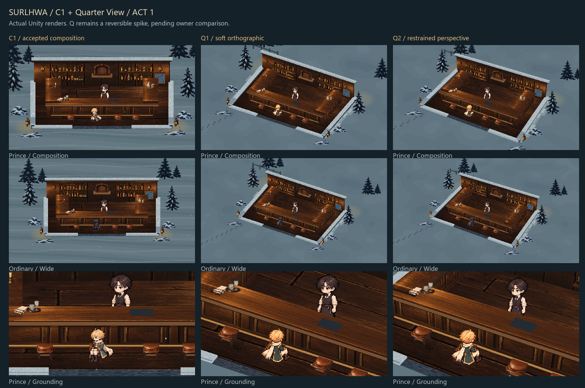

SURLHWA / Quarter View comparison
QUARTER_VIEW_READY_FOR_OWNER_COMPARISON · C1 remains the Production baseline.
Interpretation, validation and remaining costs

World plates hide reading UI and the resident workbench equally in all candidates. ContextUI frames retain them. Original 720p/1080p frames open directly; this page does not grant visual approval.
Ordinary / Empty
Ordinary / Seated
Ordinary / Composition
Ordinary / Wide
Ordinary / Grounding
Ordinary / ExistingSprites
Ordinary / ContextUI
Prince / Seated
Prince / Composition
Prince / Wide
Prince / Grounding
Prince / ExistingSprites
Prince / ContextUI
Recorded ACT 1 movement
Presentation replay of actual controller poses and their sample times. Ordinary: arrival, rear-pose seated/reaction study, departure. Prince: original-pose seated/reaction/departure control from the retained earned checkpoint; rear-pose study is in the stills. Walking uses accepted frames. Q Prince ContextUI is a forced camera diagnostic of the existing workbench and original pose; normal active bartending returns to C1. Technical service commands reach departure; no native-input, audio or 60 fps motion claim.
Bounded performance
10 seconds per candidate/resolution after 60 warmup frames. Uncapped Development Player with explicit URP offscreen requests; world plates, UI/workbench hidden. Harness cost included. Not a minimum-PC or GPU-time certification.
| Actor / view / width | P50 / P95 ms | Renderers / materials | Draws / batches | GC mean bytes | Allocated MiB |
|---|
| Ordinary / C1 / 1280 | 0.43 / 0.53 | 148 / 35 | 365.5 / 365.5 | 11 | 67.6 |
| Ordinary / C1 / 1920 | 0.44 / 0.54 | 148 / 35 | 363.9 / 363.9 | 11 | 67.6 |
| Ordinary / Q1 / 1280 | 0.48 / 0.59 | 208 / 39 | 423.0 / 423.0 | 12 | 67.6 |
| Ordinary / Q1 / 1920 | 0.48 / 0.58 | 208 / 39 | 422.8 / 422.8 | 12 | 67.6 |
| Ordinary / Q2 / 1280 | 0.48 / 0.58 | 208 / 39 | 423.0 / 423.0 | 12 | 67.6 |
| Ordinary / Q2 / 1920 | 0.48 / 0.59 | 208 / 39 | 422.7 / 422.7 | 12 | 67.6 |
| Prince / C1 / 1280 | 0.45 / 0.56 | 148 / 35 | 365.9 / 365.9 | 11 | 67.6 |
| Prince / C1 / 1920 | 0.45 / 0.56 | 148 / 35 | 363.7 / 363.7 | 11 | 67.6 |
| Prince / Q1 / 1280 | 0.49 / 0.59 | 208 / 39 | 423.3 / 423.3 | 12 | 67.6 |
| Prince / Q1 / 1920 | 0.49 / 0.58 | 208 / 39 | 422.4 / 422.4 | 12 | 67.6 |
| Prince / Q2 / 1280 | 0.49 / 0.58 | 208 / 39 | 423.1 / 423.1 | 12 | 67.6 |
| Prince / Q2 / 1920 | 0.49 / 0.58 | 208 / 39 | 422.3 / 422.3 | 12 | 67.6 |
Native frame hashes, cameras, screen bounds, motion and performance records